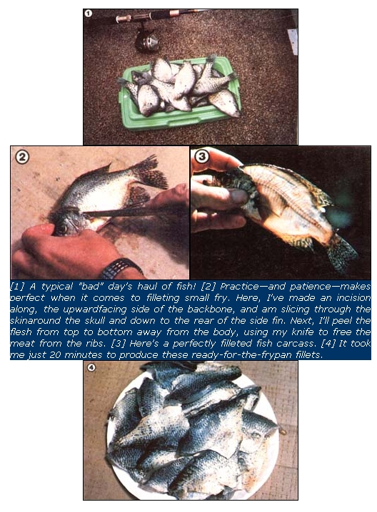

There isn't an angler around (not an honest one, anyway!) who can't use advice on how to ...
An old fellow who fishes from a pier near our house claims that he's never kept a yellow perch under eight inches long. "Them little ones are just too much trouble," he insists.
The same gentleman also tells me that whenever he does manage to bring home some "keepers", he and his wife usually cook them up for supper that same night . . . but when he's had a "Bad Day at the Pier", they simply do without their anticipated fish dinner.
Almost everyone, of course, likes to catch sizable specimens ... but I, at least, can't count on doing so. More often than not, big fish seem as scarce as calm cats at a dog show ... a fact that gave rise to the classic empty-handed angler's excuse: "All I could catch were a bunch of little ones, and I threw them back."
Threw them back! How can anyone spurn such tasty tidbits of delicious protein? I spend a lot of time angling for trophies, but I also like to eat fish. So when the big ones sulk and won't cooperate, I simply-and often easily-harvest a batch of smaller fry for the table.
In most waters, small bluegills (also called bream or brim), crappie, perch, rock bass, white bass, and other pan fish are abundant and accessible from shore, and require little investment in time or equipment to catch. What's more, gleaning some of the small fry from a lake can often prove to be good environmental management. Pan fish are notorious for overpopulating lakes, you see, causing severe competition for food ... and that situation-in turn-results in entire communities of underdeveloped animals. By harvesting some of the little guys, then, you give the remaining specimens a chance to mature naturally. That's why, in many states, bag and minimum-size limits for these species are liberal ... or nonexistent. [EDITOR'S NOTE: Hooked and released fish are also quite likely to die ... so, by keeping the fry, you'll be doing your bit for conservation.]
Small fish have some distinct culinary advantages over their big brothers and sisters, too. They're easier to scale and (in my opinion) to clean ... and their flesh is more tender and flavorful. (Some people also say that you needn't be as concerned about ingesting harmful contaminants when you eat young specimens, because they likely haven't had as much time to accumulate chemicals and heavy metals in their bodies as have big "old timers"!)
In fact, even though many people-including my old fisherman friend-believe that cleaning undersized fish isn't worth the effort, I've found that I can slice two 2-ounce scaleless, boneless fillets off a small crappie in just over a minute. And in less than 15 minutes, I can clean enough little fish (about 10) to generously feed four adults. When you consider the relatively short time it takes to catch (usually) and process that many small pan fish-as compared with the effort (and luck!) required to capture four larger specimens-the little ones definitely come out on top.
Ideally, you should dress fish as soon as you catch them. The flesh is very fragile and-after the creatures die-breaks down rapidly. On-site cleaning, however, is seldom practical ... so most anglers use a cooler or some other method (such as putting the fillets-to-be in the shade with a damp cloth covering them) of keeping their catch fresh.
Actually, fish that have been put on ice soon after being landed will be easier to clean-because the meat will be firmer and will taste better, too. Cold temperatures slow bacterial growth and enzyme activity, both of which can result in mushy, poortasting fare.
Of course, some folks keep their catch alive in water-either on a stringer or in a bait box-and although this is an acceptable way to maintain fresh flavor, you should be careful not to let fish that have died stand in water, because the liquid is an excellent medium for destructive bacteria. And, for the same reason, don't allow your quarry to rest in a puddle of meltwater in the bottom of your cooler ... either drain the box frequently, or use frozen water-filled plastic jugs to keep the "fridge" cold. (The thawing ice in such containers can provide you with a convenient, refreshing drink from time to time, too.)
Even if they're kept on ice, fish should be processed as soon after catching as possible. Decomposition typically spreads from the gills and entrails outward, so-to prevent spoilage of the meat-these organs should be removed promptly. Some piers provide special cleaning facilities, but most anglers simply do the job as soon as they arrive home.
I doubt that anybody actually likes to clean fish, but the job can be rendered pretty much unobjectionable. To avoid making a mess when you scale your catch, spread a layer of newspapers over the work area (likely the basement or garage floor) to contain the skittering flakes, or scale the fish in a deep sink or cardboard box. When it's time to pan-clean or fillet the edibles, use a board or a pad of clean newspapers as a working surface (in the latter case, when the top layer gets goopy, you can just tear off a few sheets).
Of course, if you have the room, you may want to set up a cleaning area outside. You can build a free-standing table or mount a plank-with a leg or two beneath the other wise unsupported end, like an old fold-down ironing board-from the side of a tree or pole. The best tables are about waist high and smooth, so that they can be washed off easily. And to avoid attracting flies and animals to your dwelling, remember to locate the cleaning station away from the house!
The only implements you really need to tackle this job are a sharp, flexible filleting knife and a scaling utensil (such as a stiffbladed knife, a spoon, or a serrated-edged tool made expressly for the purpose). I also keep a sharpening stone close by, and use a cotton left-handed glove (I'm a "righty") to protect my fish-gripping hand from sharp gill plate edges and pointy fins.
The key to getting through your processing task quickly is to avoid wasted motion ... and, to that end, it pays to carry all of the fish through one step before proceeding to the next. (For example, scale your entire stringerful before stopping to rinse either your hands or the catch.) Also, once you start dressing a fish, don't let go of it until the critter has been completely filleted (or whatever). You don't have to be a speed demon, of course, but a little smoothness and economy of movement in your cleaning technique will make the job much easier.
The fastest way to process small fish is to pan-dress them. Simply scale each critter, cut off its head (including the gills), slit the stomach open from the vent forward, and remove the internal organs. The dark-colored kidney can be pushed free by running your thumb along the backbone. If you desire, you can also de-fin the fish by making an incision along both sides of the dorsal fin and tearing it free from back to front. After a quick rinse under running water, your cleaned meat is ready to be cooked. (Don't overrinse the catch however. Water can rapidly wash the juices-which contain the food's delicate flavor, and many nutrientsfrom the flesh.)
Pan-dressing wastes virtually no meat and is an especially efficient technique for truly small specimens such as young perch and bluegills. Its main disadvantage is that you have to pick the meat free from the bones after it's cooked, (However, it's not difficult to remove the slabs of meat from both sides of a cooked fish right on your plate ... us ing a fork.)
Filleting, on the other hand, does leave a small amount of flesh on the carcass. . . but it also gives you (usually!) a boneless meal and-maybe best of all-eliminates the need to gut or otherwise clean a fish's body cavity. My technique works best on crappies, white bass, and rock bass, but I've been able to carve neat fillets from fairly small bluegills and perch, too.
When a large fish is processed, a fillet is usually cut with a single sideways slice of the knife from gill to tail ... but this particular method wastes too much meat when used on smaller varieties. Instead, hold the specimen with its back up and make a precise cut along one side of the dorsal fin. Slice straight down until you feel your knife touch bone, and then extend the cut from the rear of the dorsal fin to the skull. Now, lay the fish on its side and make a shallow incision around the skull and down to the rear part of the pectoral (side) fin. And, finally, grasp the flap of meat near the top of the fish and peel it away from the carcass as you guide your knife along the-rib bones. Repeat the process on the other side of the fish ... and you'll have two ready-to-becooked fillets.
Of course, when this technique is used on pan fish, it's often difficult to free the meat from the forward ribs. Small crappies and bluegills have so little flesh above these bones, however, that I usually just cut through the skin right at the top of the rib cage, thereby saving myself a lot of troublesome pulling and slicing (which, after all, would earn me only a very little extra food). The sides of perch, however, are fleshy (and delicious!) enough to warrant meticulous surgery. In any case, the ribs on pan fish virtually disappear at a point about an inch to an inch and a half (depending upon the species and size of your catch) behind the gills, so-once you get to that spot-you can simply carve straight down the backbone to the tail.
Regardless of the technique you use, try-as you process your catch-to salvage as much meat as is practical. When you've finished cutting your first fish, for example, examine it carefully for any pockets of flesh that you might have missed, and try to devise a strategy that'll let you harvest those nuggets when you carve your next fish (One often neglected chunk of meat is located on top of the backbone, just behind the skull ... and, if you've made the cut along the base of the skull necessary to remove this meat, the forward part of the fillet or pan-dressed carcass should be crescent shaped.)
Like gold, fish-even in small quantities-can be stretched thin and still be appealing. If you don't have enough to go around as a main course, for example, you can flake the cooked (and cooled) meat off the bones and add it to a salad. And small strips of fish make a wonderfully tasty addition to stirfried dishes.
My favorite way to prepare pan-dressed or filleted fish, however, is to coat them with a thick batter and fry them in a little bit of cooking oil. I usually vary my recipe a bit every time I whip up a batch, but here's one "old standby" that's sure to please your palate:
2 pounds of filleted or pan-dressed fish
1 can of warm beer
1 cup of whole wheat flour
1 tablespoon of pepper (or to taste)
1/4 teaspoon of garlic powder
salt to taste
Mix the ingredients (other than the fish) and let them stand about 1/2 hour at room temperature until the beer flattens. Then whisk the mixture until it's frothy ... dip the fish in the batter (being sure to coat each piece well), and fry them in hot oil. (Be careful not to overcook your fish! Even with a heavy batter insulation, they'll fry up incredibly fast. At medium heat, fillets take no more than a minute on each side. Fish flesh is thoroughly cooked as soon as it loses its transparent quality ... any frying after that point is reached will destroy the delicate flavor.)
Now ... enjoy your fresh fish dinner! And remember that, the next time you suffer a Bad Day at the Pier, you can still have a Good Meal at the Supper Table that night!
|
 |
|
|